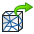
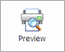

Save a 3D print file to disk
Exporting from the 3D Print tab
You can save your Solid Edge part, sheet metal, or assembly model as a .stl file or a .3mf file. Both file formats are used in additive manufacturing. For more information, see Selecting a file format for additive manufacturing.
-
Open the model document that you want to save in a format that can be sent to a 3D printer.
-
On the 3D Print tab→Export group, choose the Export command

. -
The 3D Printing Export dialog box is opened, with the Save as type set to the default file type 3MF documents (*.3mf). You can select type STL documents (*.stl) from the list. Enter filename and then click Save.
Exporting from the 3D Print menu
You can save your Solid Edge part, sheet metal, or assembly model as a .stl file or a .3mf file. Both file formats are used in additive manufacturing. For more information, see Selecting a file format for additive manufacturing.
-
Open the model document that you want to save in a format that can be sent to a 3D printer.
-
On the File menu, click the 3D Print tab.
-
On the left pane, under 3D Print, click Preview

.The model is displayed in the default model color. A dimensioned range box shows the extents of the model.
-
In the 3D Print Format section, choose the file format (STL file or 3MF file) that you want to use for 3D printing, and then click Export.
The 3D Printing Export dialog box is opened, with the Save as type list set automatically to the file type you selected [STL documents (*.stl) or 3MF documents (*.3mf)].
-
To adjust the appearance of the solid model output, click the Options... button, and then change the tolerance settings and other options in the Export Options for STL (.stl) dialog box or the Export Options for 3MF dialog box.
-
In the 3D Printing Export dialog box, type a new name for the document and click Save.
How do I
Print directly to a 3D printerOpen a Solid Edge file in 3D Builder
Scale a model for 3D printing
Create a 3D Print material
Validate a 3D print model
Check wall thickness for 3D print
Learn more
Printing solid modelsUsing the 3D Print page
Look up more details
Selecting a file format for additive manufacturingOverhang command
Overhang command bar
Print Material command
Print Validations command
Print Validations dialog box
Wall Thickness command
Wall Thickness command bar
Physical Thread command
Physical Thread command bar
Reorient command
Reorient command bar
Quick links
Working with .stl documents in Solid EdgeExport Options for STL (.stl) dialog box
Export Options for 3MF dialog box
Related Topics
Delete Voids commandDelete Voids command bar